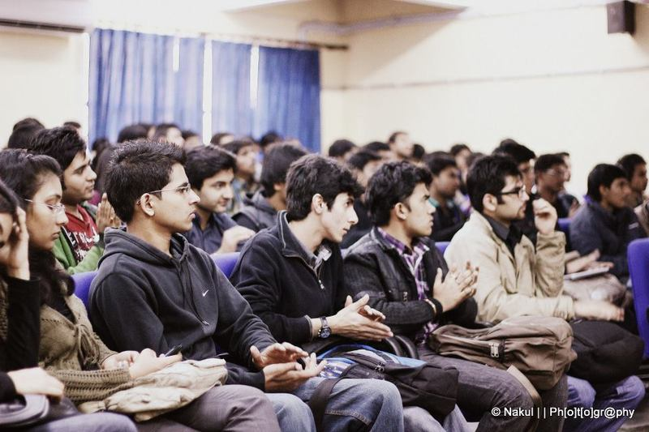

TECHNOCRATZ
“Learning and Innovation go hand in hand; only by learning of the old and present you can create something new.”

We learn only by having the will to enquire!
Technocratz, the technical club of MSIT is an initiative to provide the students an open platform to share, discuss and gain knowledge about all that encapsulates the realm of technology. It beholds the ideology of learning together and growing together.
Technocratz was brought into existence in 2002 by the students in order to increase the computer related knowledge of students and to bring practical approach to the concepts studied. The initial agenda was to conduct regular sessions and workshops in college on various topics related to computer science. Under the guidance and support of the convener Ms.Nishtha Jatana (Assistant Professor, CSE Department), the club aspires to bring to the students fresh and amazing opportunities to learn.
We yearn to create a hub for the students to explore the world of technology. We also partake in the noble motive of shining the personality of the students through presentations wherein they can present their talk on any technical topic of their interest. Technocratz provides a distinctive opportunity to interact with eminent people from the field of technology through means of a guest talk in every session. This community also acts as a solution provider to any software and academic problems or doubts placed by the students. We also work with the aim to educate the students about the latest technological developments around the world through the section “NewsByte” and various presentations.
Technocratz plans to conduct monthly meetings for the students to meet and share cross domain knowledge. Apart from these we also have a facebook page http://www.facebook.com/technocratz.msit which the students can use as a platform to interact and enquire.
We look forward to a bright future where the students can learn and grow along with Technocratz with every session.
IEEE MSIT Student Branch
IEEE is the world’s largest professional association dedicated to advancing technological innovation and excellence for the benefit of humanity. IEEE MSIT is a Student Branch of IEEE, USA established in the year 2009 to edify technical skills in a dexterous manner among the students of MSIT. The main objective laid down at the very beginning was to promote IEEE amongst the students. IEEE MSIT with its aim of “leading the wave of change” aspires to achieve excellence in all its endeavors. The Student Branch is committed to help young undergraduates evaluate their career goals, polish their technical skill set and create the building blocks of a lifelong and diverse professional network by providing them a plethora of opportunities.
IEEE MSIT has been significant in organizing workshops, short term project initiatives, scientific excursions, lecture Series and competitions since its beginning. IEEE MSIT has conducted many hands-on workshops on robotics and Arduino, web development, and Android amongst others. In this academic session, IEEE MSIT launched the Short Term Project Initiative where students from 1st and 2nd year worked with the 3rd and 4th year students in the field of machine learning, game development using Python, electronics, and robotics for 2 months to gain practical knowledge in their interest area. The flagship event of IEEE MSIT, “Focal Point” has also been extremely successful with eminent speakers and guests such as Dr. Kiran Bedi, First women IPS officer, Mr. Bharat Sethi, Founder of postergully.com, and Ms. Rashmi Anand, famous author and domestic violence survivor who works with the Delhi Police Crime Against Women Cell.
To promote specialized education and awareness amongst the students, IEEE MSIT has 3 Chapters under it- IEEE MSIT Microwave Theory and Technique Society (MTT-s), IEEE MSIT Power and Energy Society (PES), IEEE MSIT Computer Society (CS). IEEE MSIT MTT-s organizes Summer Grant Program (SGP) every year based on the domains of Radio Astronomy and Astrophysics. As part of the SGP, the students have previously worked on projects like NASA Radio Jove, Sudden Ionospheric Disturbance, Itty Bitty Telescope and Meteor Sky wave Detection. Many excursions like ARIES, Nanital and a trip to Microwave lab in DU have been organized by MTT society of IEEE MSIT. IEEE MSIT PES successfully organized the October Projects Week this year where students were mentored by their seniors and worked on projects like door lock system, solar power lightening, and multimeter using Arduino. This week long event culminated with a competition held on IEEE Day, 6th October 2015, and the winners were awarded with a 2 months subscription of JMoon Labs, giving them a chance to work on their own ideas and explore. IEEE MSIT Computer Society covers all the major areas of computing and information technology. It has organized workshops and seminars on Data mining, Networking, Web Development and Augmented reality. This year it organized CodeStart- a competitive programming competition which saw participation in huge numbers.
IEEE MSIT WIE is an affinity group dedicated to promoting women engineers and scientists. As part of STAR (Students, Teachers and Research), IEEE MSIT WIE has organized interactive sessions in schools to impart knowledge about engineering and the STEM field and inspire young children, especially girls, to join it. It has also organized Breast Cancer Awareness session and Self Defense workshops.
In order to make the benefits of IEEE accessible to maximum student members, IEEE MSIT believes in the concept of Special Interest Groups (SIG’s). The 6 SIG’s that are active this year aim at providing an avenue to people with similar interests, enabling them to come together, explore their fields of interest and learn together. The society regularly manages Special Interest Groups namely C/C++, Android App Development, Canvas (Designing), Embedded and Robotics, Full stack web development using Python, and Java to provide a practical edge to the students in an artful manner
Our student members have represented IEEE MSIT Student Branch at various National and International platforms like the IEEE European Microwave Conference held in Paris, France, R10 (Asia Pacific) Student- WIE- YP Congress 2015, Colombo, Sri Lanka, IEEE PES Innovative Smart Grid Technologies Europe 2014 (ISGT Europe), and All India Student Congress. The efforts and allegiance of the members of IEEE MSIT has been commended by many. IEEE MSIT won the prestigious Darrel Chong Student Activity Award in 2015 and 2013 for organizing laudable and value driven student activities. Dr. Poonam Bansal, Director, MSIT, Immediate Past Branch Counselor, IEEE MSIT and Dr. Vimal Gaur, Reader, CSE Department, Past Branch Counselor won the R10 Outstanding Branch Counselor award in 2015 and 2012 respectively for exemplifying IEEE’s commitment towards technical and professional development of students and for their constant guidance and support which led to the proliferation of IEEE MSIT Student Branch.
IEEE MSIT Student Branch has bequeathed dedication, passion and ardor to its members and the society shall continue this legacy to serve students and hence the institution with utmost zeal and dedication. The vision of the student branch can be aptly defined by the words of Henry Ford
"Coming together is a beginning. Keeping together is progress. Working together is success."
IEEE MSIT Branch Counselor: Mr Sitender, Assistant Professor, IT (eve) Dept
IEEE MSIT Chairperson: Aakash Bansal(in.aakash.bansal@ieee.org)
Link to the IEEE MSIT website: http://www.ieeemsit.org/
e-mail: ieeemsitsb@gmail.com
MSIT QUIZ SOCIETY
The MSIT Quiz Society was founded in 2011 by 4th year students, and has grown exponentially in the time span of one year. Last year the first general quiz conducted by the society, Auxesis, received a very good response. It was sponsored by ‘NotehallIndia’. Around 150 teams participated in the intra campus event. The next event was the “Avada Kedavra Quiz” – a quiz themed on Harry Potter! Participation was again in good numbers, and it was a big hit with the audience. The society also conducted a one of a kind “Health Awareness Cycle Rally” earlier this year. The society’s quizzers dominated USIT’s quizzes at ‘InfoXpressions 2011’
Moving onto the odd semester of 2012, the society conducted an intra college “Sports Quiz” in August, which was a huge hit. It was organized by the present heads of the society, a few weeks after which the new team of co-ordinators was selected. Together, the team shall be setting the stage on fire come 2013.
Also, breaking the monotony of the co-ordinator based activities were the MSIT Quiz Sessions. These sessions are open to all, and are fundamentally simple theme based quizzes. Though the durations vary depending on the Quiz Master’s generosity, they offer a fun and simple way of entertaining the quizzing enthusiasts thirst for knowledge, and the new comer’s curiosity about the society and what it offers. There have been three sessions this year, and more will follow suit.
Another feather in the cap has been the Quiz Society’s conquests across various colleges. In February 2012, two of the members came 2nd at ‘Anugoonj 2012’, which is a mean achievement as this is a University level fest, and had more than six competing zones and over a 100 colleges. Also, we had finished first at the Zone-4 preliminary rounds of the quiz. In March ‘12, a team from our society won the Tech Quiz at the annual IIT D tech fest TRYST .Next month we had another victory, as a member of our group won the first prize at Shivaji colIege, Delhi University. In the month of September 2012, another team came 3rdin the Sports Quiz at Synapse’12 at the Maulana Azad Medical College. Society members also won the Science and Technology and Literary quiz at BVP in October 2012, and reached the finals of the General Quiz. Third position at the Amity Institute of Technology was ours for the taking too. We also won the third prize in the Green Quiz at Apeejay School of Management. The Society members also participated in the quiz fests at NSIT, AIIMS, MAMC, and the Hindu College in the odd semester, and we hope to improve our showing at these fests in the coming years.
With a talented pool of enthusiastic quizzers coming up the ranks, the society will only go from strength to strength in the coming years.
GDG MSIT
Google Developers Group (GDG) at Maharaja Surajmal Institute of Technology, a subchapter of GDG New Delhi is a developer’s community that provides programmers an opportunity to hone their programming skills through an interactive format. The chapter was founded by Rahul Rajpal (IT 4th yr) in the year 2014 under aegis of Dr. Prabhjot Kaur (HOD , IT Department).
Since its inception, GDG MSIT has hosted various events and workshops in the past for students to learn, share and discuss in a unique manner. The society organized a Cyber Security Workshop in November 2015 in association with i3India.
GDG MSIT in association with our annual tech fest AVENSIS 2k16 organized three extravagant events which saw a good turnout of almost 250 participating teams. The events were Design-a-thon: An event which tested one’s designing skills; AlgoJam: It tested the problem solving capability and the ability to design the most optimal solution; Hackathon: It evaluated the programming skills of the participants.
GDG MSIT is one of the most active societies of the college and aims to expand its horizons with a well reputed team comprising of students from the IT and CSE branch.
Some of the upcoming events under the society are its weekly technical sessions - DevG , Gaming Development Workshops, Hackathons and last but not the least a Tech Summit which would see speakers from the technical world interacting with the students.
Core team of GDG MSIT :
Chapter Mentor - Dr. Prabhjot Kaur
Chapter Advisor - Rahul Rajpal
Chairperson - Ankit Panwar
Vice Chairperson - Shubham Kashyap
Event Advisors - Prateek Jha , Sagar Jangam , Harsh Jot Singh , Malvika Prasad , Vasu Negi, Shivi Verma , Chhavi Duggal , Harshit Gupta , Hrishikesh.
Visit us at :- www.fb.me/gdgmsit
PRAKRITI
Prakriti, the eco club of MSIT, was founded on 3rd March ,2010, in the wake of need for a college society that aims at promoting and increasing environmental consciousness, awareness and responsibility amongst the college youth and the populace.
As a non profitable society, Prakriti is committed to the belief that solutions are more effective and enduring when they involve mass local participation in planning and implementing projects.
Prakriti also exists to support and strengthen NGOs (such as Goonj) and rural or urban communities (like Lions’ Club) that work towards betterment of the society.
Through its various programs, Prakriti provides college students opportunities to develop problem-solving, decision-making and leadership skills, which enables them to participate in future community developments as engaged and active citizens.
An important part of our growth and motivation as people , lies in contributing to the greater good; being part of something greater than ourselves. So, take the privilege and join hands with us in an attempt to transform our society’s present ecological scenario.
Visit us at : prakriti.msit.in


{kind=link}